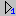
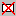

Участок заполнится плиткой. Заполнение начинается с того, что в начальную точку помещается выбранный узор. Причем базовая точка этого узора совмещается с начальной точкой. Затем следующие узоры размещаются в заданные точки вокруг предыдущих узоров. Это может продолжаться длительное время. После заполнения появится сообщение и участок будет выглядеть так или, например так:

Что может быть не так?
1. Узор не был проверен и на участке образовались пустоты или плитки спрятались одна под другой.
Надо исправить узор, снова выбрать его и снова нажать
2. Плитки не расположены точно вдоль стороны, к которой они должны примыкать.
Нужно скорректировать начальную точку и снова нажать
3. На участке видны странные незаполненные ничем клинья, проходящие из угла в угол.
Плохо состыкованы линии контура участка. Нужно исправить контур и снова нажать
4. Выдается сообщение и том, что заполнение закончено, но на участке не появилось ни одной плитки.
Начальная точка выбрана неудачно - на участок не попала ни базовая точка первого фрагмента узора, ни базовые точки соседних узоров. Это особенно часто может проявляться, если начальная точка расположена в вершине какого-нибудь остро выступающего угла участка. Перенесите начальную точку.
Рассмотрим вторую проблему подробнее - плитки не расположены точно вдоль стороны, к которой они должны примыкать. Это проявляется когда не совсем удачно выбрана базовая точка узора, например, не на границе одной из плиток, а внутри. Если аналитически рассчитать оптимальное положение начальной точки не удается, можно поэкспериментировать с кнопкой . Она укладывает на участок только один узор, в начальную точку. Можно проверить размещение плиток, скорректировать начальную точку и снова проверить укладку одного узора.
Для удаления всех плиток с участка - предназначена кнопка .
Перед повторным заполением не обязательно удалять плитки с участка, нажмите кнопку Заполнить
В главе Отчет и комментарий можно найти описание, как проверить количество и расположение половинок.